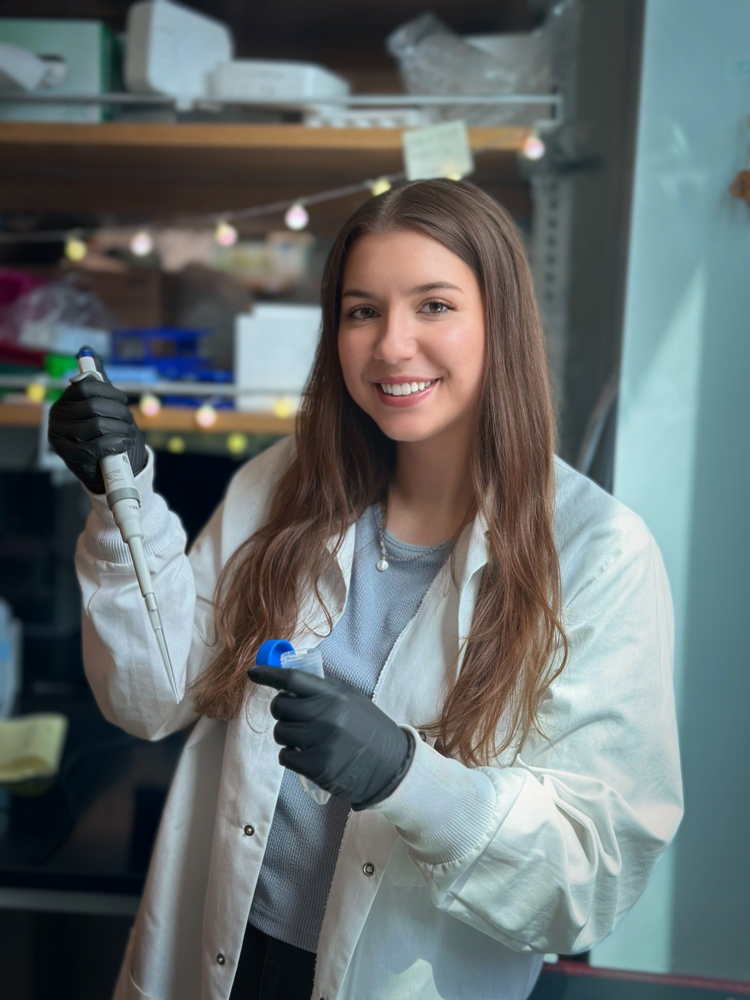

About Me

I am a PhD candidate in Bioengineering at Rice University and an NSF Graduate Research Fellow in Dr. Michael King's laboratory, with an expected graduation of January 2027. My dissertation — Leveraging Mechanotransduction and Membrane Biophysics to Enhance T Cell Activation and Function — investigates how mechanical forces, specifically fluid shear stress, regulate T cell activation through the mechanosensitive ion channels, and how membrane composition governs immune cell signaling and function. This work has direct implications for improving ex vivo manufacturing strategies for adoptive cell transfer (ACT) immunotherapies, including next-generation CAR T cell therapies targeting solid tumors.
I began my doctoral studies at Vanderbilt University in August 2021. While there, I simultaneously pursued a Master of Science in Biomedical Engineering through an independent translational project conducted in close clinical collaboration with Vanderbilt University Medical Center. This MS research investigated circulating tumor cell (CTC) dynamics in metastatic prostate cancer patients undergoing Pluvicto (177Lu-PSMA-617) radioligand therapy — a distinct project from my PhD dissertation work, involving direct patient sample processing, image analysis algorithm development, and multidisciplinary collaboration with oncologists and radiologists. I obtained my MS in May 2024, and a manuscript from this work is currently under review. In July 2024, Dr. King's laboratory relocated to Rice University, where I transferred and am completing my PhD.
I completed my Bachelor of Science in Biomedical Engineering, Magna Cum Laude, from the University of Florida in 2021, where I received the Outstanding Undergraduate Research Award. As an undergraduate I explored research spanning magnetic particle imaging for immune cell tracking in vivo, tau protein aggregation in Alzheimer's disease models, and orbital debris analysis for NASA's Standard Breakup Model.
Beyond the bench, I am committed to science education and mentorship. I have served as a teaching assistant, chaired an elementary school outreach program through the BME Graduate Student Association at Vanderbilt, and mentored undergraduate and high school students in the King Laboratory.
I am currently seeking positions in industry and research — including industry and post-doctoral positions — where I can apply my expertise in immunology, mechanobiology, and translational research to impactful problems. Feel free to reach out.